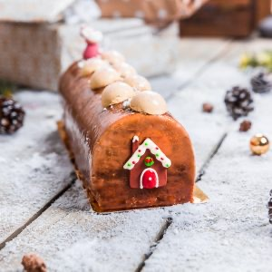

Bûche chocolat caramel

Aujourd’hui je vous retrouve avec une nouvelle recette de bûche! Une bûche chocolat caramel que l’on a tous dégusté le soir de Noël.
Pour être franche, je ne pensais pas publier cette recette si tôt et pourtant vous avez été nombreux à la réclamer alors je me suis dépêchée d’écrire ce long pavé! Déjà que la bûche est longue à préparer, écrire la recette l’était presque tout autant mais ça y est la recette est en ligne dans quelques minutes et j’espère qu’elle convaincra bon nombre d’entre vous! Pour une fois je peux dire que je suis fière de moi (je l’avais déjà dit pour la bûche citron framboise) mais là je le suis encore plus! J’ai réussi à préparer cette bûche en un temps record dans le stress et tout ce qui va avec tout en étant très peu persuadée du résultat que j’allais obtenir. Si je vous dis ça c’est simplement pour vous que vous ne vous laissiez pas impressionner par la taille de la recette et que si j’ai réussi à faire cette bûche chocolat caramel n’importe qui, en prenant son temps pourra y arriver. Je sais que faire une bûche ça peut faire peur! C’est long, il y a beaucoup d’étapes mais si on se tient à la recette et à des petites règles simples cela devient (presque) un jeu d’enfants et on ressort de tout ça plutôt fier de soi. Il ne faut pas oublier qu’une bûche de Noël est avant tout une pâtisserie. Il faut donc respecter les dosages, les étapes, la cuisson car il s’agit là d’un domaine d’activité plutôt précis (du moins pour ce type de recette). Pour en revenir plus particulièrement à l’histoire de cette bûche, j’ai hésité longtemps avant de la faire (trouvant le challenge beaucoup trop grand au vue du temps que j’avais devant moi) mais l’appel du chocolat fut plus fort que tout ça. Vous avez ici la recette d’une bûche avec une crème bavaroise au chocolat et un insert au caramel. La base de la bûche est un sablé breton au dessus duquel se trouve une fine couche de bavaroise surmontée d’un insert macaron! J’en parle ici car j’ai hésité à faire l’insert macaron (et je pense que vous allez vous aussi vous demandez si oui ou non il est indispensable). Pour vous donner l’avis de ceux qui ont pu goûter cette bûche (ils étaient unanimes) ; oui il faut l’insert macaron!! C’est vrai qu’il apporte beaucoup que ce soit en texture ou en goût et personnellement j’ai également beaucoup aimé. Je n’ai pas pu prendre de photos de l’intérieur de la bûche avant de la servir pour pouvoir l’apporter intact et garder l’effet de surprise jusqu’au dessert mais on a pris une petite photo au moment de la découpe pour que vous puissiez avec une idée de l’intérieur. Je vous laisse découvrir tout ça plus bas et je vous souhaite à nouveau de passer de joyeuses fêtes de fin d’année ♥
Enregistrer
Ingrédients
- Sucre semoule - 120g (60g+60g)
- Crème liquide entière - 495g
- Vanille - 1/2gousse
- Jaunes d'oeufs - 120g
- Gelatine en feuilles - 7g
- Sucre semoule - 75g
- Eau - 18g
- Blancs d'oeufs - 29g + 22g
- Poudre d'amandes - 70g
- Sucre glace - 70g
- Lait - 125g
- Crème liquide entière - 125g + 225g
- Jaune d'oeufs - 50g
- Sucre - 38g
- Chocolat noir - 68g
- Gelatine en feuilles - 3g
- Jaune d'oeufs - 40g
- Sucre - 80G
- Vanille liquide - 2.5g
- Fleur de sel - 4g
- Beurre pommade - 80g
- Farine - 115g
- Levure chimique - 5g
- Gelatine en feuilles - 7G
- Sucre - 116g
- Eau - 100g
- Crème liquide entiere - 100g
- Fécule de Maïs - 6.5g
- Chocolat au lait - 83g
- Nappage neutre - 266g
Instructions
- Mettre la gélatine dans un bol d'eau froide
- Dans une casserole, verser la crème et les graines de la gousse de vanille (vous pouvez utiliser de la vanille en poudre)
- Faire chauffer à feu très doux
- Dans un saladier, faire blanchir les jaunes d’œufs avec 60g de sucre et réserver Blanchir signifie battre les jaunes avec le sucre jusqu'à obtenir un mélange blanchit et mousseux
- Dans une poêle (à fond épais de préférence), verser uniformément les 60g de sucre restant
- Chauffer à feu moyen jusques obtenir un caramel foncé Note : pour faire un caramel à sec, ne remuez pas le sucre dans la casserole. Une fois qu'il commence à se former, saisissez le manche de votre poêle et faites des mouvements circulaires pour faire naviguer le sucre sur toute la surface du récipient pour obtenir une couleur homogène.
- Quand vous avez obtenu votre caramel et hors du feu, verser un peu de crème liquide chaude (attention aux projections)
- Continuer ainsi jusqu'à épuisement total de la crème
- Remettre sur feu doux pour que la crème et le caramel se mélange bien ensemble
- Verser ce mélange sur les jaunes blanchis et mettre le tout dans une casserole
- Cuire jusqu'à obtenir la température de 85°C
- Hors du feu, ajouter la gélatine essorée
- Mixer le tout et versez la crème au caramel dans votre moule à insert
- Placer au congélateur
- Avec le reste de crème faites des demi-sphères (en utilisant un cercle à demi sphère), qui seront utilisées pour la décoration de la bûche
- Préchauffer le four à 160°
- Mixer le sucre glace et la poudre d'amande
- Tamiser ce mélange et réserver
- Verser 29g de blancs d’œufs dans la cuve de votre robot
- Dans une petite casserole, sur feu moyen-doux verser l'eau et le sucre et cuire jusqu’à obtenir un sirop
- Une fois que votre sirop atteint 110°C commencer à monter les blancs en neige
- Lorsque le sirop atteint 118°C le verser très doucement sur les blancs (qui ont commencé à monter) tout en continuant de battre
- Vous allez obtenir une meringue
- Continuer de battre votre meringue jusqu'à refroidissement (environ 10minutes)
- Pendant ce temps, dans un saladier, verser le mélange sucre-amande et les 22g de blancs d’œufs et ne mélangez pas!!
- Ajoutez petit à petit la meringue et macaroner le tout
- Avec une poche munie d'une douille ronde, dresser un fond de la taille de votre future bûche
- Cuire à 160°C pendant 18 minutes (attention à bien surveiller la cuisson car elle varie d'un four à l'autre)
- Réserver sur une grille
- Dans un bol, mélanger la farine, la levure et le sel
- Blanchir les jaunes d’œufs avec le sucre en fouettant énergétiquement (ou en vous aidant d'un batteur électrique)
- Ajouter le beurre ramolli
- Mélanger à l'aide d'une cuillère en bois
- Lorsque le mélange est homogène, tamiser le mélange farine-levure-sel
- Continuer de mélanger
- Quand le mélange est homogène former une boule de pâte et enveloppez-la pâte de film alimentaire
- Placer au frais pendant 1h
- Préchauffer le four à 180°
- A la sortie du frigo, fariner le plan de travail
- Abaisser la pâte de manière à obtenir une épaisseur de 4 à 5mm Pour plus de facilité et pour éviter d'avoir une pâte qui colle au rouleau ou au plan de travail : Abaisser la pâte entre deux feuilles de papier sulfurisé.
- A l'aide d'un emporte-pièce de la taille de votre future bûche (ou légèrement plus grand), former un rectangle
- Laisser l'emporte pièce ou le moule autour de votre disque de pâte (sinon à la cuisson le sablé va totalement s'étaler) Astuce : Je me suis servie de mon moule à tarte rectangulaire. J'ai découpé la pâte à sa taille puis je l'ai faite cuire dedans. Une fois refroidi je l'ai retaillé très légèrement à la taille de ma bûche.
- Enfourner à 180° pour 15 à 20 minutes
- Sortir le fond de pâte du four et laissez-le entièrement refroidir
- Quand le sablé est entièrement refroidi retaillez-le si besoin à la taille de votre bûche
- Casser le chocolat noir dans un saladier et réserver
- Mettre la gélatine dans de l'eau froide
- Faire bouillir les 125g de crème liquide et le lait dans une casserole
- Dans un saladier blanchir les jaunes d’œufs avec le sucre
- Ajoutez la crème/lait aux œufs blanchis et cuire jusqu'à ce que le mélange atteigne 85°C
- Verser 175g de cette préparation chaude sur le chocolat noir et mélanger jusqu'à ce que le chocolat soit fondu Vous pouvez ajouter de la vanille au reste de crème qu'il vous reste et en servir avec les parts de bûche ou la conserver au frais, il s'agit d'une crème anglaise!)
- Essorer et incorporer la gélatine au mélange
- Monter les 225g de crème liquide entière en crème fouettée
- Incorporer le chocolat à la crème petit à petit
- Placer une feuille de rhodoïd dans le fond de votre moule à bûche
- Verser de la bavaroise au chocolat à mi-hauteur
- Déposer l'insert congelé par dessus
- Verser le reste de bavaroise (en gardant environ 1-2 càs)
- Déposer l'insert macaron par dessus (retaillez-le si nécessaire)
- Étaler le reste de bavaroise sur le macaron
- Lisser et déposer le sablé breton par dessus (retaillez-le également si nécessaire)
- Placer au congélateur pour 5 à 6h
- Avant de sortir la bûche du congélateur préparer le glaçage
- Faire ramollir la gélatine dans de l'eau froide
- Faire chauffer les 100g d'eau
- Faire un caramel à sec (comme précédemment) et une fois que le caramel à une belle couleur, hors du feu ajouter un peu d'eau (attention aux projections)
- Continuer de verser de l'eau jusqu'à épuisement de celle-ci
- Remettre sur le feu moyen-doux pour que le caramel et l'eau se mélangent
- Mélanger la crème avec la fécule de maïs et mettre au micro-ondes environ 40sec pour faire gonfler le mélange
- Verser ce mélange dans le caramel et porter à ébullition
- Ajouter la gélatine essorée puis le chocolat au lait coupé en morceaux et le nappage neutre
- Mixer le tout
- Avant de glacer la bûche assurez-vous que le glaçage soit à une température de 21°C
- Sortir la bûche du congélateur
- Démoulez-la et verser immédiatement le glaçage par dessus
- Décorer selon vos envies et votre imagination 🙂
- Placer au frais jusqu'au moment de servir
Les tips de la communauté
Bûche très appréciée pour ses saveurs chocolat-caramel et son insert macaron original. Quelques questions sur la gélatine et la consistance mousseuse. Plusieurs testeurs ont confirmé que c'est excellent avec des variantes personnelles réussies.
Astuces
- C'est une bûche mousseuse, non glacée
- Utiliser des feuilles de gélatine (quantité en grammes indiquée)
- L'insert doit rester liquide, pas besoin de gélatine supplémentaire
- Observer le mélange de la gélatine pour qu'elle se dissolve correctement
Variantes suggérées
- Remplacer le sablé breton par de la feuillantine
- Ajouter du sel au caramel pour relever le goût
- Finaliser avec un glaçage caramel et paillettes décoratives
Ajustements signalés
- S'assurer que la gélatine se dissout correctement pour éviter les morceaux dans la mousse